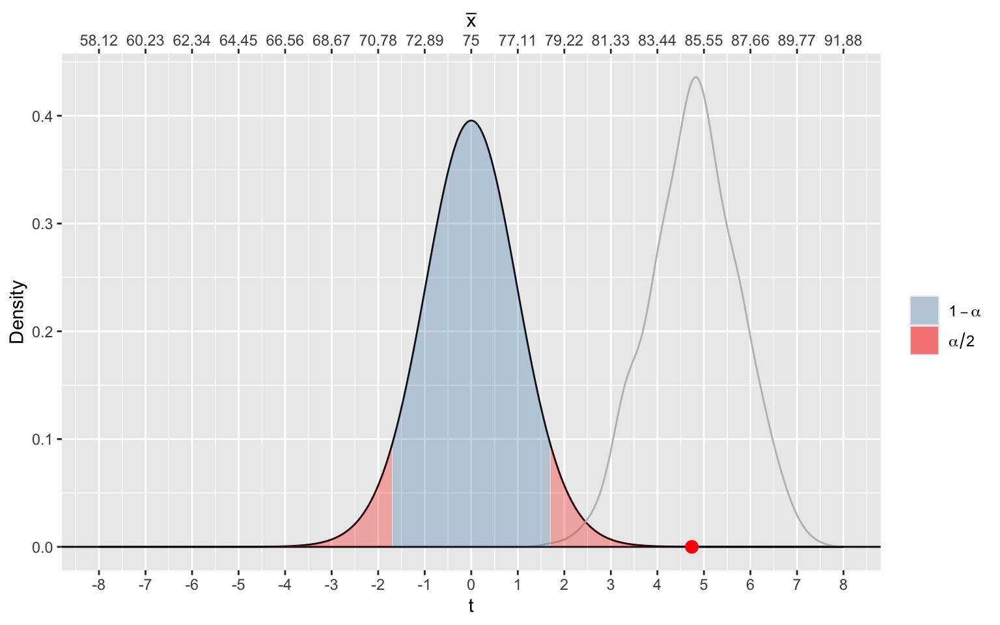
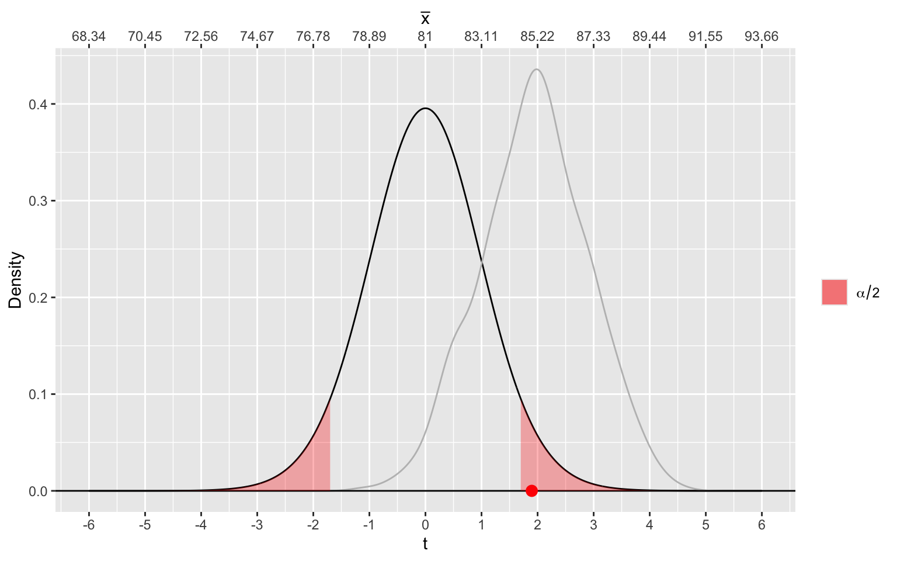
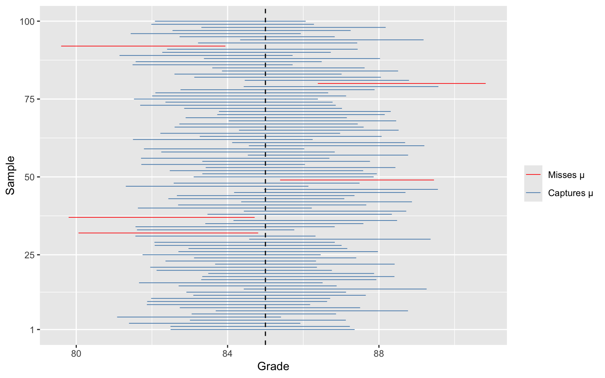

Hypothesis Testing & Confidence Interval
Introduction
Imagine conducting a study about whether banning computers improves grades in MATH 240. The historical average grade in the course is known to be 75, based on years when laptop was permitted. A new cohort of 30 students is required to keep all electronic devices away throughout the semester. At the end of the semester, we find that the mean grade of this cohort is 85, 10 point higher than the historical average.
In hypothesis testing, we’re making a decision about whether the 10-point difference between would be unusual in a world where there is in fact no difference between the grades of the new cohort and the historical average. With confidence interval, we’re determining the range of point-differences within which this 10-point difference is not unusual.
Overview
What is hypothesis testing?
What is confidence interval?
Why is confidence interval helpful?
What is hypothesis testing?
Step 1:
Hypothesis testing is a method with which we determine whether there is enough evidence in our sample data to support an assumption about a population. Particularly, we assume the true population parameter to be a certain value. Let’s take the mean (\(\mu_x\)) as an example. In our study, we assume \(\mu_x = 75\) (the historical average). Is \(\mu_x\) really still 75 for the no-computer cohort? We then have 2 hypotheses:
Null hypothesis (\(H_0\)): The true population mean grade for the no-computer cohort is equal to the historical average of 75 (i.e., banning computers has no effect on grades). \[\mu_x = \mu_0 = 75\]
Alternative hypothesis (\(H_a\)) for a two-tailed test: The true population mean grade for the no-computer cohort differs from the historical average of 75 (i.e., banning computers does have an effect on grades). \[\mu_x \neq 75\]
How are we going to decide if our data supports \(H_a\)? What exactly is the kind of evidence that our data could provide to compare these two hypotheses?
Step 2
The calculations we perform to gather evidence from our data are based on certain assumptions about our data. We need to check these first.
Is the sample representative of the population of interest? This is important for sampling with replacement. If my sample of MATH 240 has 1 Maggie and 1 Le, and is representative of the population I’m interested in (i.e., students at Colgate University), then a resample with 2 Maggies and 0 Le should represent another plausible sample from that population.
Are individual observations independent? Normally, if researchers collect data through random sampling, they should be.
Are assumptions about sampling distributions met? This topic requires another page to cover, but for the sake of this one let’s assume the sample size is large enough that we can apply the Central Limit Theorem for our tests.
Step 3
Recall that we’re assuming the population mean is 75 (that \(H_0\) is true). In this world, how unusual is our sample mean, \(\bar{x} = 85\)?
If we compare 85 with 75, we might say there is indeed a difference — a whole 10 points! But this alone cannot be considered good evidence for \(H_a\), because a raw difference does not account for the variability in our data. Consider two scenarios: in one, every student in the no-computer cohort scored almost exactly 10 points above the historical average. In another, grades ranged wildly from 50 to 100, and the 10-point difference is simply the result of a mathematical average that cancels out a lot of noise. Both scenarios give us \(\bar{x} = 85\), but they tell very different stories about how convincing that difference really is.
This is why we standardize our evidence into a test statistic. For a one-sample t-test, this is: \[t = \frac{\bar{x} - \mu_0}{s / \sqrt{n}}\]
where
- \(\bar{x}\) is our sample mean (85)
- \(\mu_0\) is the hypothesized population mean (75 under \(H_0\))
- \(s\) is the sample standard deviation, and \(n\) is the sample size.
The denominator \(s/\sqrt{n}\) is the standard error, which captures how much we’d expect the sample mean to vary if we repeated the study many times.
Under \(H_0\), the \(t\)-statistic tells us how many standard errors \(\bar{x}\) is away from \(\mu_0 = 75\). This is how we decide how “unusual” our observed mean would be in a world where banning computers has no effect. The further our \(t\)-statistic is from 0, the more statistical support we have for \(H_a\).
Step 4
By the Central Limit Theorem, the \(t\)-statistic follows a known distribution (approximately Gaussian), centered at 0 under \(H_0\). This allows us to translate our \(t\)-statistic into a probability statement: assuming \(H_0\) is true, the probability of observing our sample mean or one that provides more support for \(H_a\) is the area under the curve beyond our \(t\)-statistic.
Importantly, our observed \(t\)-statistic lands in one tail, but we’re conducting a two-tailed test, meaning we care about values that are unusually small or unusually large. A value equally far out in the opposite tail would provide just as much evidence against \(H_0\). Therefore, we obtain our p-value, the probability of observing a sample mean at least as unusual as ours if banning computers truly had no effect, by taking the smaller of the two one-tailed probabilities and doubling it: \(2 \min(P(T \leq t),\ P(T \geq t))\).
If our p-value is very small, that means that in a world where banning computers has no effect on grades, obtaining a cohort mean of 85 when the historical average is 75 would be very unlikely. The question is: what counts as “very small”?
Step 5
Historically and conventionally, when \(p < \alpha = 0.05\), we say that we have statistically discernible support for \(H_a\). If \(p \geq 0.05\), we say that we don’t have statistically discernible support for \(H_a\).
This doesn’t mean that \(H_0\) is not true. In fact, the only way to know if \(H_0\) is true or not is to have data on the whole population of interest. If we have statistically discernible support for \(H_a\), we say we reject the null hypothesis.
Notice how little information this is! We set up hypothesis testing by assuming a value of \(\mu_x\) and calculating the probability of observing our data under that assumption, so our decision is a single yes/no verdict against one value.
We never asked: what is the true population mean for students in a no-computer class? Our sample mean \(\bar{x} = 85\) gives us an estimate, but there is uncertainty around it. Well, we can’t know for sure the true population mean without data on the entire population! However, our sample data does allow us to ask: what range does the true population mean lie in?
What is a confidence interval?
A confidence interval (CI) includes all values of \(\mu\) for which our observed \(\bar{x}\) is not unusual. In general, it provides a range of values that a population parameter can take on.
This is the t-distribution under our \(H_0\), in which we assume \(\mu_x=75\).
Imagine that instead of assuming \(\mu_x=\mu_0=75\), we assume \(\mu_x=\mu_0=81\). Under this assumption, our sample mean is not “unusual” enough for us to have statistically discernible support for \(H_a\) (i.e., against \(H_0\)).

Calculating a CI is essentiall collecting all values of \(\mu_0\) that, similar to 81, our data would not provide statistically discernible evidence against. In other words, a CI includes all \(\mu_0\) values that, under the sampling distribution centered at \(\mu_0\), our \(\bar{x}\) falls in the \(1 - \alpha\) proportion.
Therefore, although we don’t need to conduct hypothesis testing to construct a CI, CI is tied to a chosen significance level \(\alpha\), which controls the confidence level as \(1 - \alpha\).
For example, setting \(\alpha = 0.05\) gives a 95% CI, meaning that if we repeatedly sample from a population of interest, 95% of the confidence intervals computed based on these samples would contain the true population mean.
Any single confidence interval either contains the true \(\mu_X\) or it does not, since \(\mu_X\) is a fixed constant. We simply have no way of knowing which. Our one interval might be among the unlucky 5% that miss.
